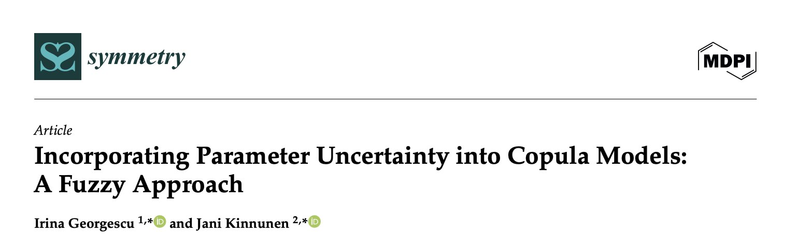
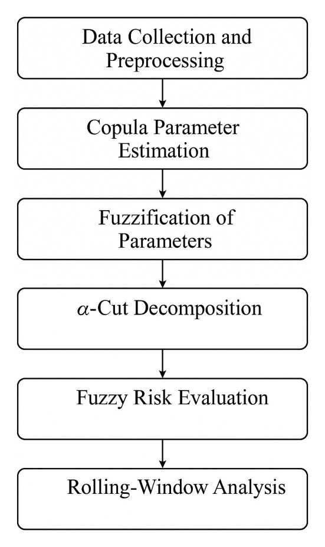

Strategy
Mission Grey CRO Jani Kinnunen’s Research on Risk and Uncertainty Selected as Editor’s Choice

Research coauthored by Mission Grey’s Chief Research Officer Jani Kinnunen and Irina Georgescu has been selected as an Editor’s Choice article. The paper, Incorporating Parameter Uncertainty into Copula Models: A Fuzzy Approach, was published in the MDPI journal Symmetry.
Symmetry is an international, peer reviewed journal indexed in Web of Science and Scopus. Its Editor’s Choice selection highlights a small number of papers that scientific editors consider particularly interesting to readers or important to their research area.
The paper addresses a practical challenge: a risk model can produce a precise number even when its underlying assumptions are uncertain. Using gold and oil market data, the authors model a range of plausible relationships between the assets. Their analysis shows how uncertainty about those relationships affects assessments of potential losses, especially during market stress.

For Mission Grey, the broader lesson is directly relevant to decision making: organizations need to understand the assumptions behind an assessment, how risks interact, and where uncertainty could change their choices. Making that uncertainty visible helps leaders ask better questions and prepare for different outcomes.
All insights Mission Grey · External intelligence